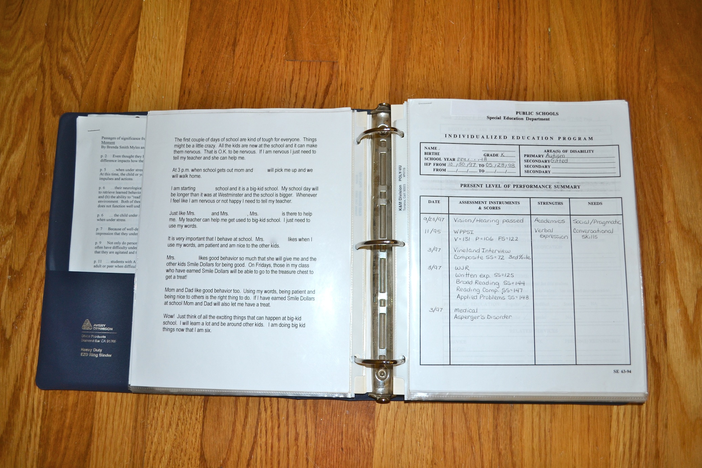

One of the most intimidating processes for a parent is the Individual Eduation Plan (IEP) meeting. This meeting should be a team effort by all persons providing services to your child with the focus being on providing a quality education.
Federal law mandates that every child has equal access to a free and appropriate education regardless of physical/mental ability. This law is called the individuals with Disabilities Education Act (IDEA). The sub-sections which agencies are required by law to inform you of are found below. The IDEA is far more extensive than that which is covered here. The full legal text of the 2004 Updated IDEA with simplified explanations can be foudn by visiting www.disability.gov
Preparing for your child's IEP meeting can be a challenging task. Gathering all the past IEP forms, current notification forms nursing notes, evaluation reports, grades, doctor's orders/letters, test results, classroom notes and updates, tracking forms, parent's goals etc.can add up to what sometimes seems a veritable mountain of paperwork. Keeping it all in one place and readily available is the challenge.
The answer? A Parent's IEP Notebook! An updated Parent's notebook will provide a ready reference for all current IEP materials. It provides a place to organize, track and plan for current IEPs as well as assisting the parent in tracking their child's progress. It will allow the parent a ready review to assess how well the current IEP goals are working for their child and all the parent to assess when chages need to be made. Kepping an dupdated IEP notebook in an easily accessible area will provide the parent an exccellent organizational tool. Documents can be easily added and subtracted from the notebook as needed. The list could be endless! Use only that information that is pertinent to you.
Use the following items:
The following information should be included in your parent notebook. Use only those categories that apply to your situation. NOt all parents are going to need all these sections. Make up only those sections that work best for you.
New information and old information may be added and subtracted at any time. It is recommedned that all "old" information be placed in a filing cabinet under the dates of the school year for future reference.
Remember. This is to help you, the parent, stay organized and keep all your information handy. This list could be endless! Use onle that information that is pertinent to you!
Preparation is the key in making your first IEP meeting a successful one. Visit your child's classroom and be familiar with the teacher, aides, therapists, and administrators etc. who whork with your cild. Be sure to pay clase attention to staffing, levels of staff training, teacher/aide ratio per child etc. Pay specific attention to actual school facilities to make sure the building will meet your child's physical need for ramps, bathroom accessibility, etc.
Consult with your child's primary care provider or pediatrician in identifying any medical cares they may need during the school day. TAlk with your child's private therapists, counselors, etc. who are familiar with your child and their individual needs regarding recommendations for goals to be met during the school day. Document all of these conversations and request letters of medical necessity from the child's physicians for medical cares to be performed whil at school
Familiarize yourself with the IDEA Act focusing on the IEP setion. (It is recommended to read the education section at www.disability.gov.
Obtain a copy of your School District's Guide to the Individualized Education Plan. It is also recommended that you print a personal copy of the Federal Guide to the Individualized Education Plan to use for comparison.
*Note: Not all School District publications are easily read and understood. Many are abbreviated and difficult to read. Bu referencing to a copy of the Federal IEP guide, you may be able to clear up misunderstandings and clarify any problem questions that may arise during the meeting.
CLICK TO FIND A COPY OF THE FEDERAL "GUIDE TO THE INDIVIDUALIZED EDUCATION PLAN".
| IEP Action Forms (Click on the links below to download the forms.) |
|---|
| IEP Meeting Agenda |
| IEP Goals Form |